רקע לצילומי המוצרים — דוגמאות
יובל, ביקשת לבדוק אם אפשר רקע עדין וטבעי יותר. אלה ארבע אפשרויות על אותם צילומים: המקור (אפור-כחלחל), חול חם, פשתן ומנטה רכה של המותג. הבקבוקים, התוויות והצבעים של המוצרים נשארו כמו שהם — רק הרקע והמשטח שמתחת משתנים.
אחרי שתבחרי כיוון — אני מעבד ככה את כל צילומי המוצרים באתר ובקטלוג. העמוד הזה פתוח רק דרך הקישור הזה.
שמן גוף
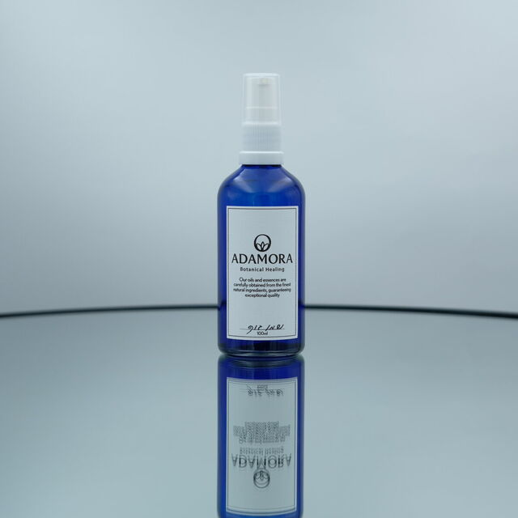
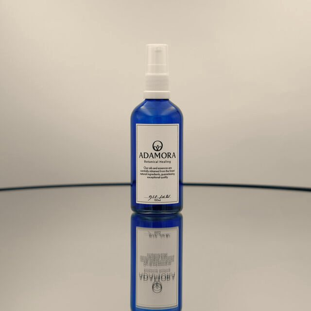
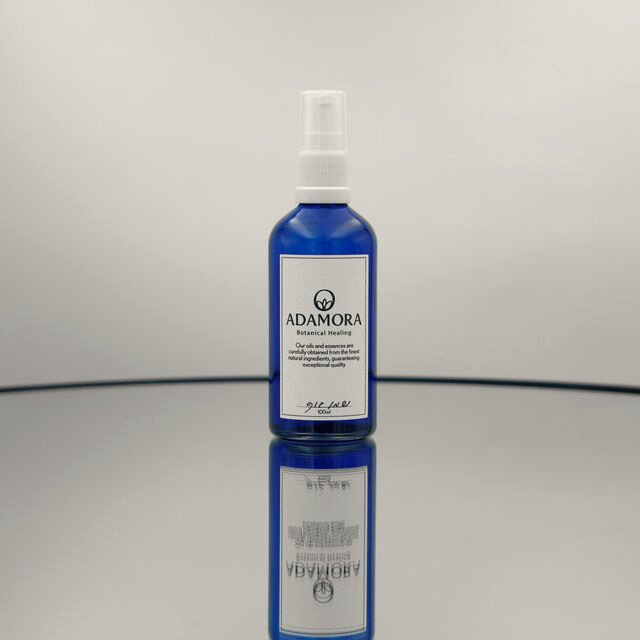
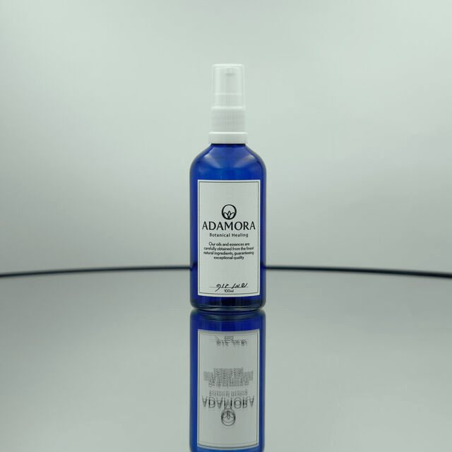
משחת קלנדולה

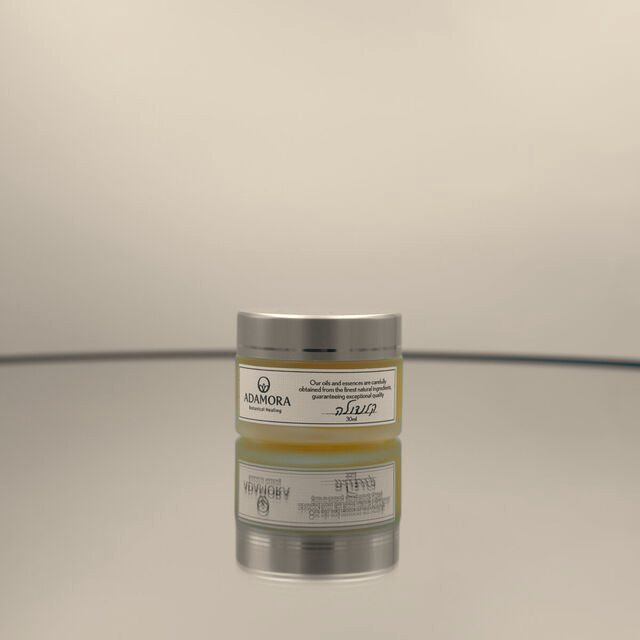
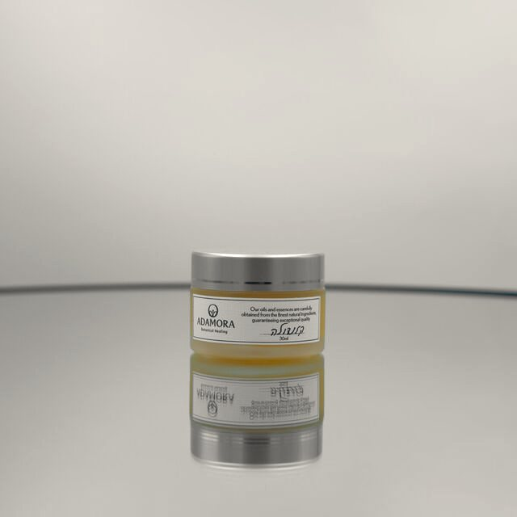
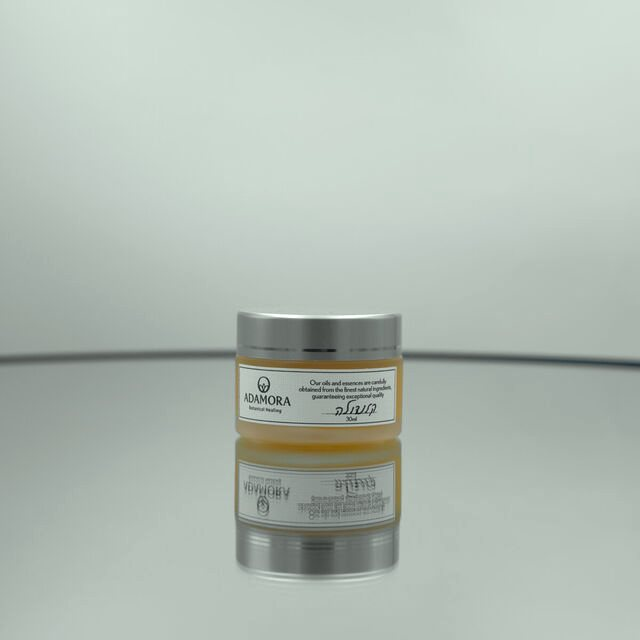
קרם פנים לאקנה
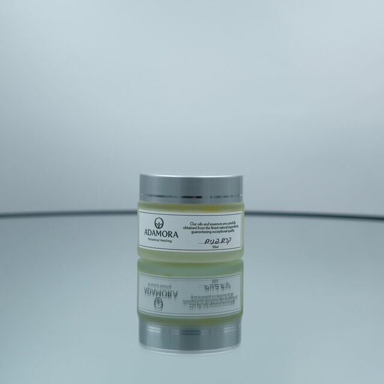
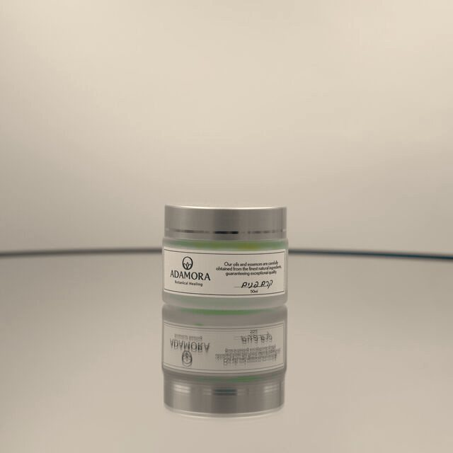
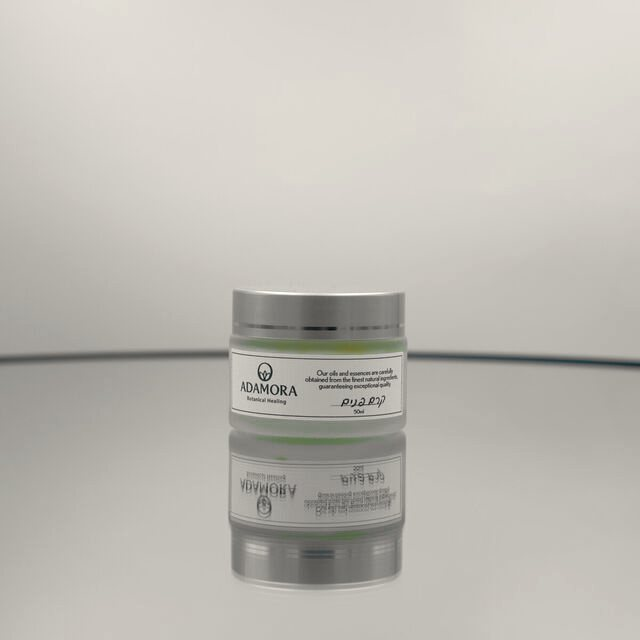
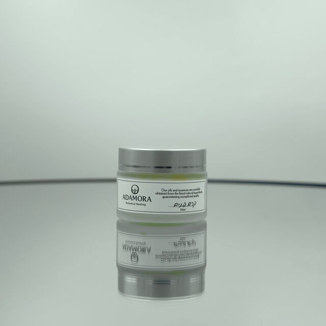
מארז שינה

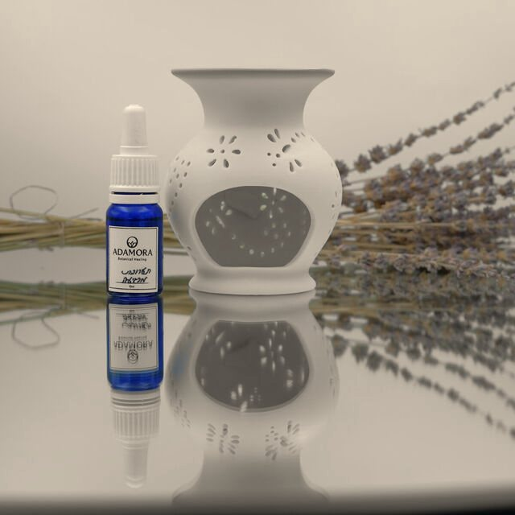
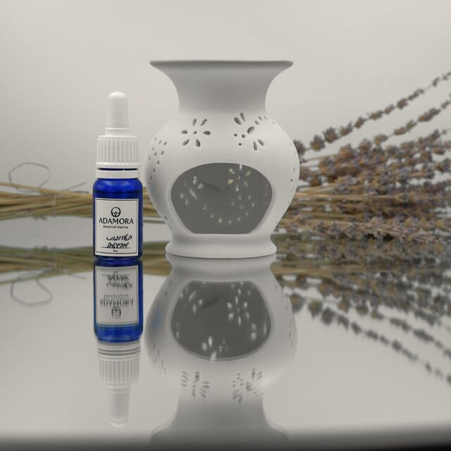
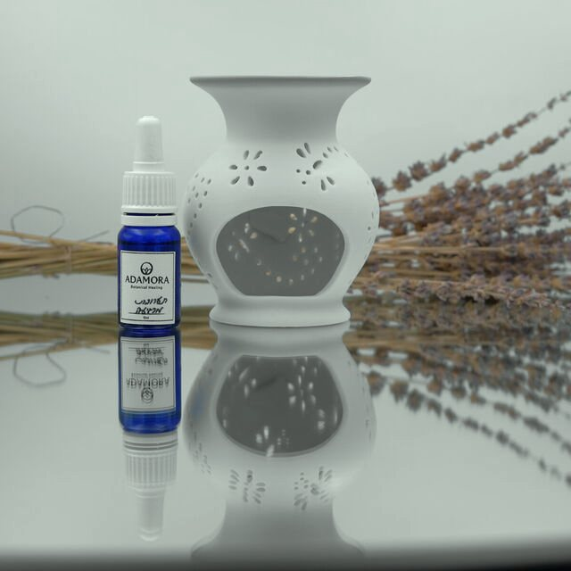
רולר ארומטי
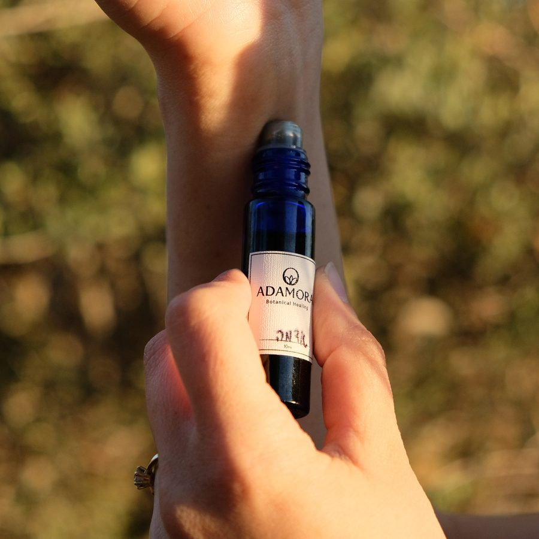
קרם ידיים

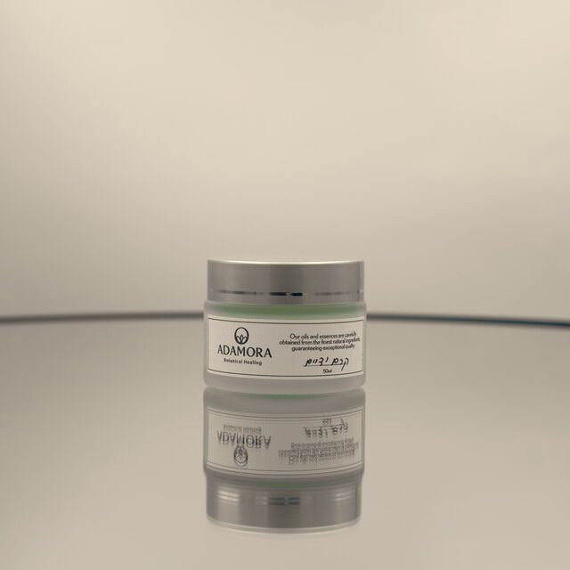
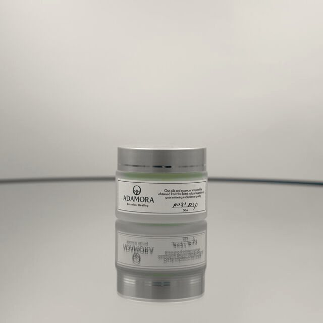
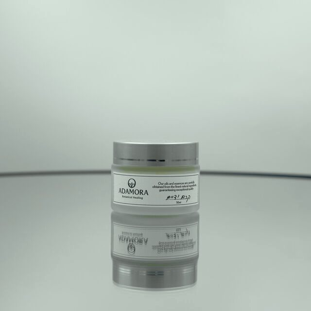